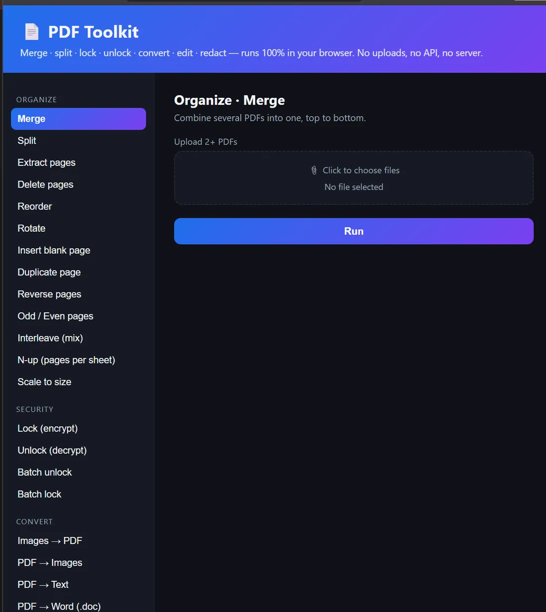
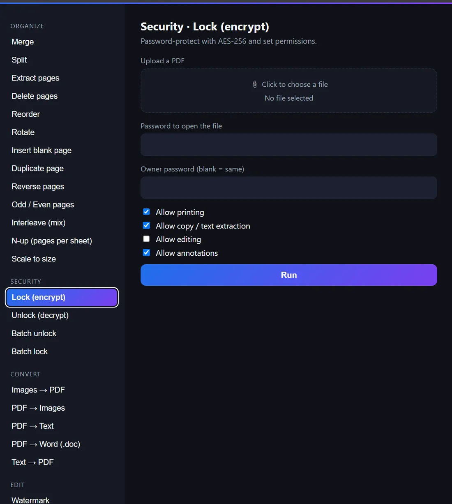
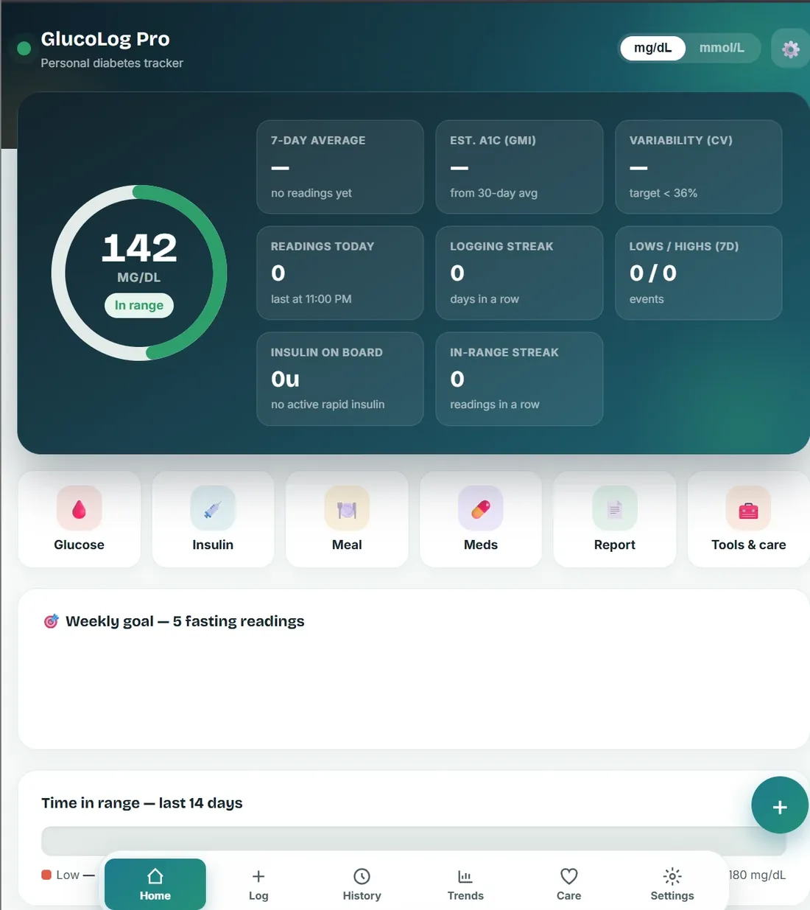
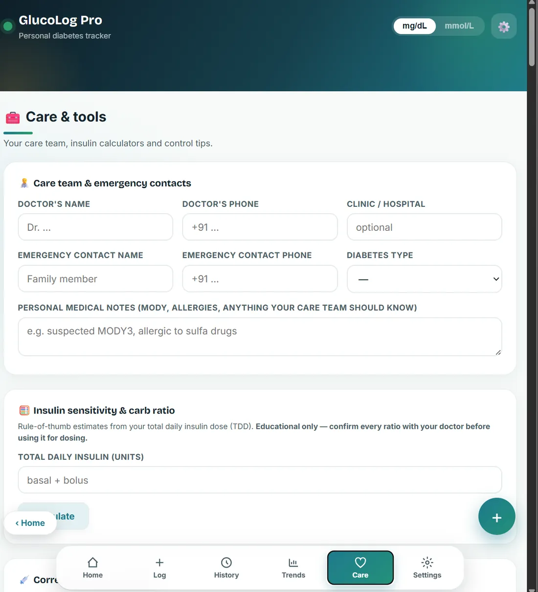
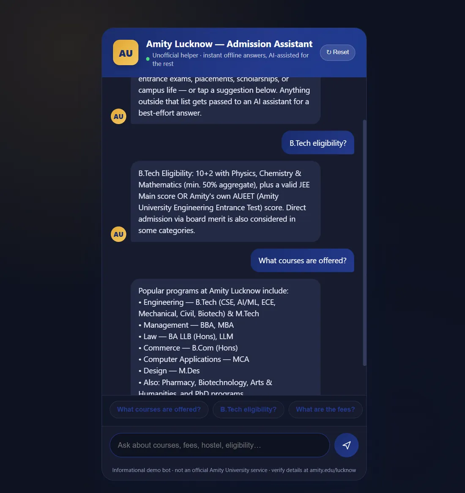

Offline PDF Toolkit
53 PDF tools running entirely client-side. No server, no upload — the document never leaves the browser.
- JavaScript
- Client-side
- Offline-first
- Zero upload
- AES-256
Repository TODO: live demo URL
I research how generative AI breaks — and build tools that don’t.
Claims are cheap. I build the corpus, run the experiment, and publish the numbers.
I work on the failure surface of generative AI: where safety filters give way, where agentic systems inherit vulnerabilities, where synthetic media erodes the assumption that evidence is evidence.
My method is first-party and reproducible. Survey claims get grounded in experiments I run myself — an n = 880 prompt corpus probing safety-filter behaviour, CVE data verified against the NVD rather than recycled from secondary write-ups, and figure pipelines in matplotlib that regenerate every plot from the source data so a paper's prose and its charts cannot drift apart.
The tools I ship follow the same instinct. In the Offline PDF Toolkit and GlucoLog Pro, nothing leaves the browser — not because a policy page says so, but because there is no server to send it to. Privacy as architecture, not as a promise.
Surveys, reviews and measurements on how generative systems fail.
ICETA 2026 · NITRA Technical Campus, Ghaziabad · 17–18 July 2026
A survey of offensive uses of large language models across phishing, malware generation and social engineering, anchored by a first-party safety-filter experiment over an n = 880 prompt corpus.
TODO: add DOI / proceedings link once indexed
Four-author IEEE review
A review of the security, reliability and trust surface of agentic AI systems, built on NVD-verified CVE data and measured filter-performance results rather than secondary summaries.
TODO: add DOI / preprint link
Springer format · delivered as an 8-minute conference talk
A PRISMA-informed critical review over 75 sources, narrowed to a 51-study coded corpus, covering screening techniques, documented failure cases and the state of industry adoption.
TODO: add DOI / proceedings link
In progress
Benchmarking ML-KEM hybrid key exchange against classical TLS 1.3 handshakes.
TODO: add results / preprint link when the work lands
Offline-first tools where privacy is architectural, not a promise.


53 PDF tools running entirely client-side. No server, no upload — the document never leaves the browser.
Repository TODO: live demo URL


An offline single-HTML health tracker with a CGM screenshot digitizer, Whoop integration and Web Bluetooth device support.
Repository TODO: live demo URL

A Node.js / Express chatbot backed by Google Gemini, with a voice-callback channel built on ElevenLabs and Twilio.
TODO: repo link & live demo URL
Telecom security, research and field programmes.
Integrated Telecom & Data Networks and Cyber Security.
Non-Teaching Credit Course research internship.
Legal-rights awareness campaign. Certificate of Appreciation.
Programme support.
Languages, data tooling, model APIs and the security work they serve.
Professional community and chapter building.
Member of the IEEE student community.
Leading the effort to charter an ACM Student Chapter at Amity University, Lucknow.
CONTACT07
Open to research collaboration, conference conversations and internship opportunities in AI security and applied cryptography.
TODO: add CV / résumé PDF link